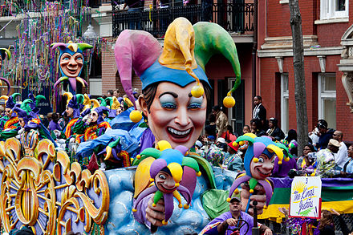
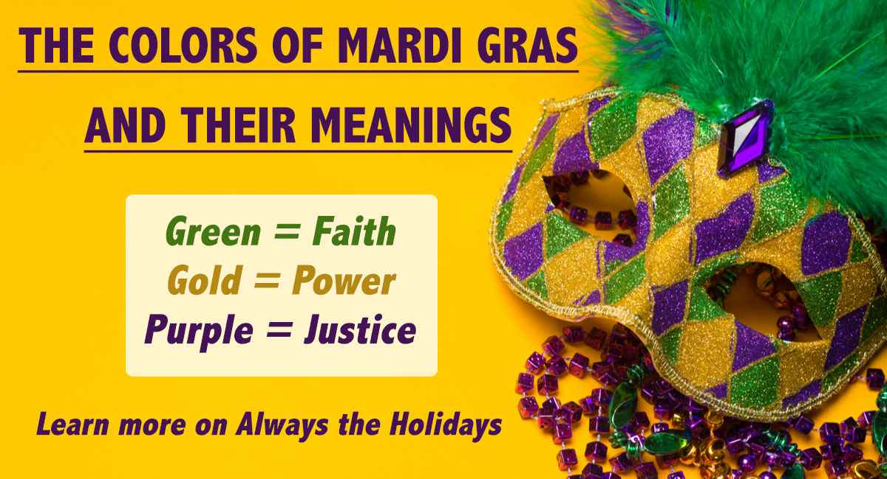

So what's Mardi Gras ?
The holiday of Mardi Gras is celebrated in all of Louisiana, including the city of New Orleans. Celebrations are concentrated for about two weeks before and through Shrove Tuesday, the day before Ash Wednesday (the start of lent in the Western Christian tradition). Usually there is one major parade each day (weather permitting); many days have several large parades. The largest and most elaborate parades take place the last five days of the Mardi Gras season. In the final week, many events occur throughout New Orleans and surrounding communities, including parades and balls (some of them masquerade balls). The parades in New Orleans are organized by social clubs known as krewes; most follow the same parade schedule and route each year. The earliest-established krewes were the Mistick Krewe of Comus, the earliest, Rex, the Knights of Momus and the Krewe of Proteus. Several modern "super krewes" are well known for holding large parades and events (often featuring celebrity guests), such as the Krewe of Endymion, the Krewe of Bacchus, as well as the Zulu Social Aid & Pleasure Club—a predominantly African American krewe. Float riders traditionally toss throws into the crowds. The most common throws are strings of colorful plastic beads, doubloons, decorated plastic "throw cups", Moon Pies, and small inexpensive toys. Major krewes follow the same parade schedule and route each year. While many tourists center their Carnival season activities on Bourbon Street, major parades originate in the Uptown and Mid-City districts and follow a route along St. Charles Avenue and Canal Street, on the upriver side of the French Quarter. Walking parades - most notably the Krewe du Vieux and Chewbacchus - also take place downtown in the Faubourg Marigny and French Quarter in the weekends preceding Mardi Gras Day. Mardi Gras Day traditionally concludes with the "Meeting of the Courts" between Rex and Comus.
Get to know our traditional colors
The colors traditionally associated with Mardi Gras in New Orleans are purple, green, and gold. The colors were first specified in proclamations by the Rex organization during the lead-up to their inaugural parade in 1872, suggesting that balconies be draped in banners of these colors. It is unknown why these specific colors were chosen; some accounts suggest that they were initially selected solely on their aesthetic appeal, as opposed to any true symbolism. Errol Laborde, author of Marched the Day God: A History of the Rex Organization, presented a theory that the colors were based on heraldry: all three colors correspond to a heraldic tincture, and Rex's goal may have been to create a tricolor to represent their "kingdom". Purple was widely associated with royalty, while white was already heavily used on other national flags, and was thus avoided. Furthermore, he noted that a flag in green, gold and purple in that order complies with the rule of tincture, which states that metals (gold or silver) can only be placed on or next to other colors, and that colors cannot be placed on or next to other colors. Following a color-themed Rex parade in 1892 that featured purple, green, and gold-colored floats themed around the concepts, the Rex organization retroactively declared that the three colors in that order symbolized justice, power, and faith. The traditional colors are commonly addressed as purple, green, and gold, in that order—even though this order technically violates the rule of tincture.
Our dear mayor LaToya Cantrell

LaToya Cantrell (née Wilder; born April 3, 1972) is an American politician serving as the Mayor of New Orleans, Louisiana since May 7, 2018. A Democrat, Cantrell is the first woman to hold the office. Before becoming mayor, Cantrell represented District B on the New Orleans City Council from 2012–2018.
Cantrell was inaugurated as mayor on May 7, 2018, the first woman to hold the position in the city's history. Once in office, she established a new Office of Youth and Families, with the goal of creating a strategic plan to address families in crisis in the city. Cantrell also founded a Gun Violence Reduction Council, tasked with finding solutions to violent crime. Starting with a push to rededicate hotel taxes collected within the city for city use, Cantrell has focused on her #fairshare initiative to improve city infrastructure, public transportation, public parks, and green spaces. As part of that initiative, in October 2018 the City of New Orleans filed a lawsuit against four opioid manufacturers and distributors. During the 2019 session of the Louisiana Legislature, Cantrell negotiated the Fair Share Agreement with Governor John Bel Edwards and city, state, and tourism officials. The agreement secured $50 million in upfront funding for the city's infrastructure needs as well as $26 million in annual recurring revenue for the city. Following the approval of the Fair Share Agreement, New Orleans voters approved 3 of the 4 proposals Cantrell and the City Council put on the ballot in the 2019 general election. Voters approved a $500 million bond sale and a tax on short-term rental properties, as well the establishment of a Human Right Commission under the New Orleans Home Rule Charter.